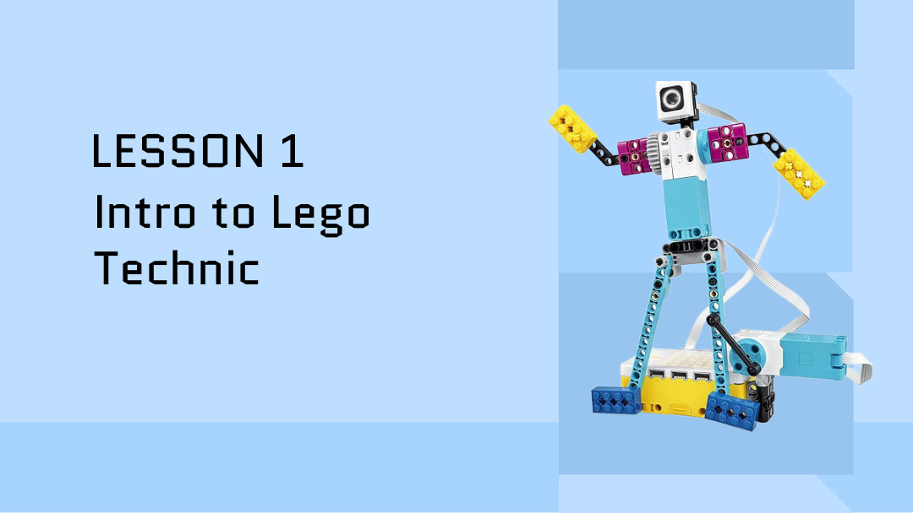
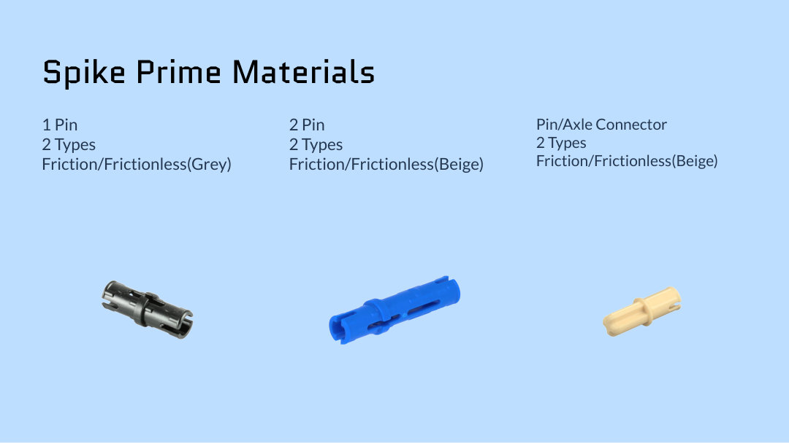
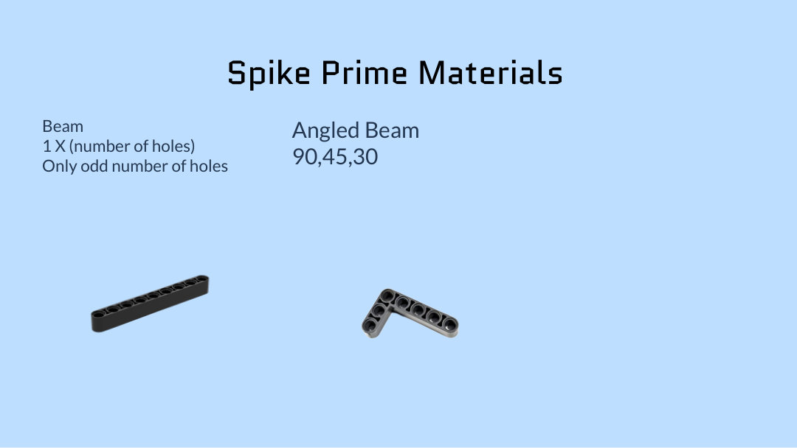
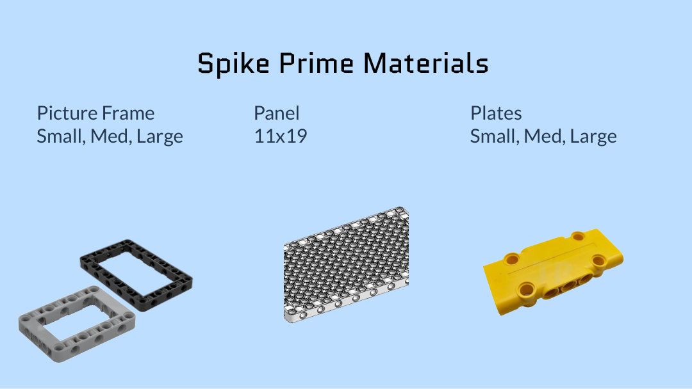
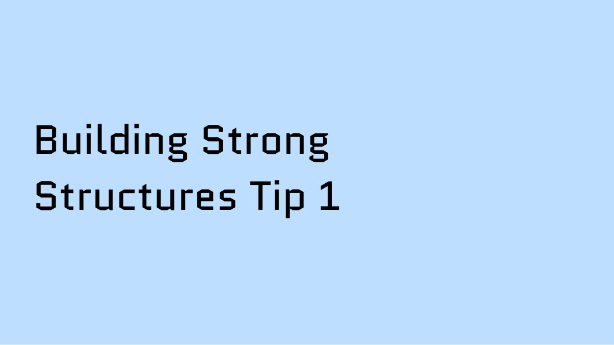
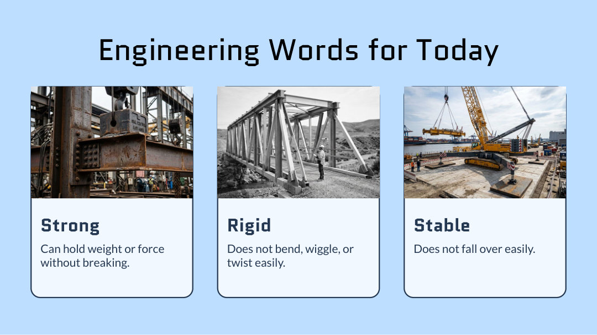
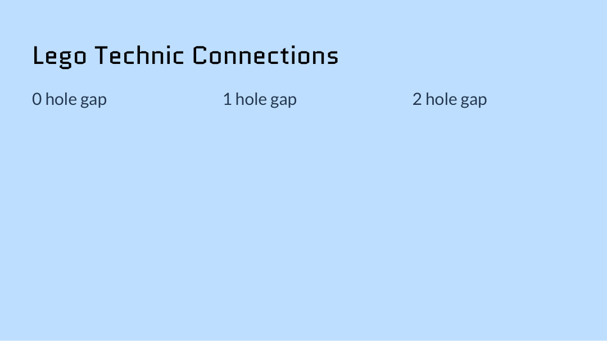
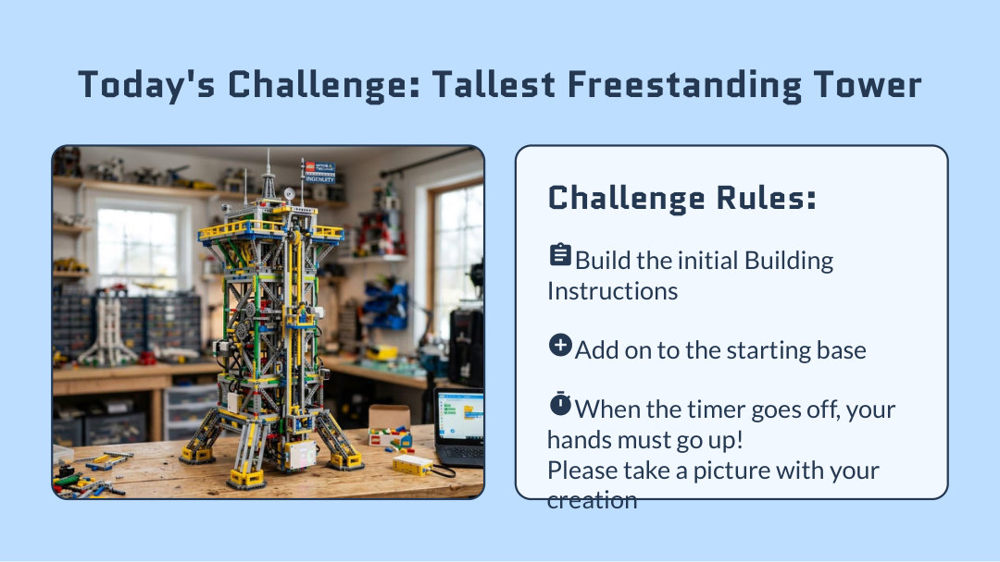

Lesson Goal
Today I will learn how LEGO Technic pieces connect so I can build a tower that is strong, rigid, and stable.
The goal is not just to build tall. The goal is to build like an engineer.



Review: How Do Tall Buildings Stay Standing?
Wide Bottom
A wide base spreads out weight and makes the structure harder to tip over.
Strong Frame
Beams and supports help the building stay rigid instead of wiggling.
Balanced Shape
Tall buildings need weight balanced from bottom to top.
Engineering Tip: Use a Wide Base
Narrow Base
Easier to tip over.
Wide Base
More stable and harder to knock down.
Rule to remember: The taller your tower gets, the more important the base becomes.



BioGlow Mission: Build the Signal Tower
The BioGlow research team needs a signal tower to lift a glowing beacon above the habitat so every team can find home base.
Strong
The tower must hold the beacon without breaking apart.
Rigid
The tower should not bend, wiggle, or twist when it gets taller.
Stable
A wide base helps the tower stay standing in the habitat.

Challenge Rules: Keep It Fair
Fair rules help us compare designs like real engineers.
After the Challenge: Reflection
Take a picture of your tower before taking it apart.
Quick Lesson Flow
Before Building
- Show lesson goal.
- Review LEGO Technic materials.
- Review strong, rigid, and stable.
- Look at tall building examples.
- Explain why wide bases help.
During / After Building
- Review fair material rules.
- Build the tallest freestanding tower.
- Test if it stands for 10 seconds.
- Measure and take a picture.
- Reflect on what worked.